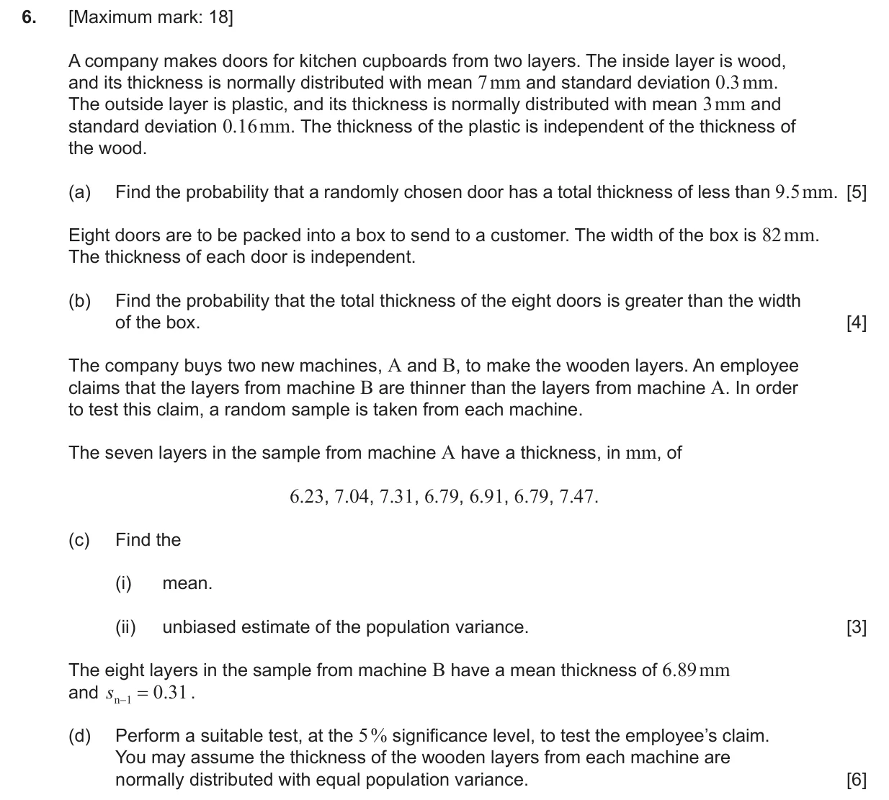
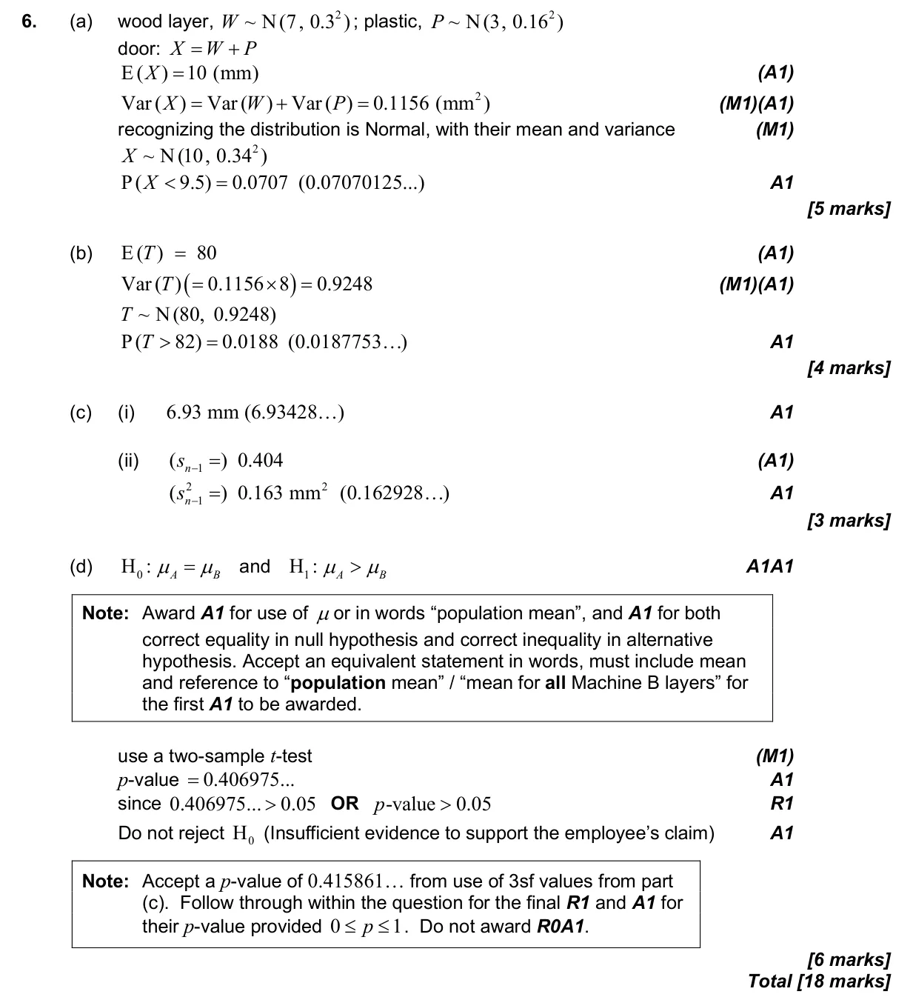

4.15 Combining normal variables and the central limit theorem4.11 Hypothesis testing: χ² tests and the t-test4.14 Linear combinations of random variables and unbiased estimates
Question

Markscheme

18 marks - Nov P2 TZ0 - Mathematics: Applications and Interpretation HL

